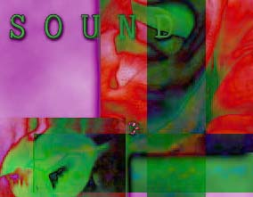

EDITOR'S NOTE
This issue of Switch focuses on an area that includes a broad spectrum
of artists and theoreticians who possess innovative and varied ideas. They
use creative thought and experimentation with new technologies to speak
the ancient language of "Sound" in new ways.
The "validity" of electronic art is still under scrutiny -- is
it art or is it technology? Agostino Di Scipio addresses this topic directly
in his article, when he questions Heidegger:
Larry Wendt's article explores in length the relationship he sees in the
concepts inherent to sound-text composition and sound poetry, with the random
and flexible structure of hypertext:
Several of the events held by SoundCulture in the Bay Area this spring are
reviewed, and an in-depth interview with the director of SouncCulture and
sound artist, Ed Osborn, describes the history of SoundCulture as well as
some of the current uses of Sound by contemporary artists.
We hope you find this issue of Switch both enjoyable and thought-provoking,
and we welcome your feedback, should you feel so inclined.
Loretta L. Lange
Editor